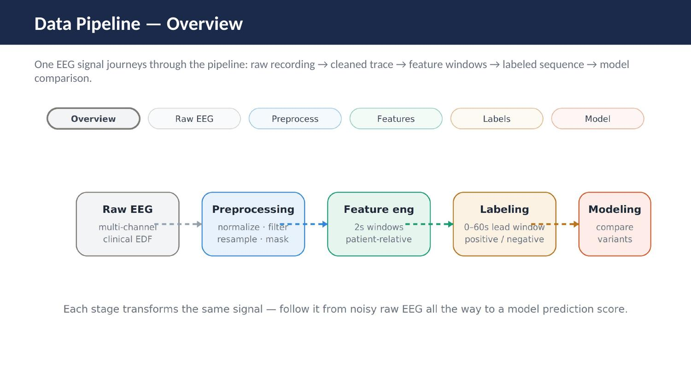
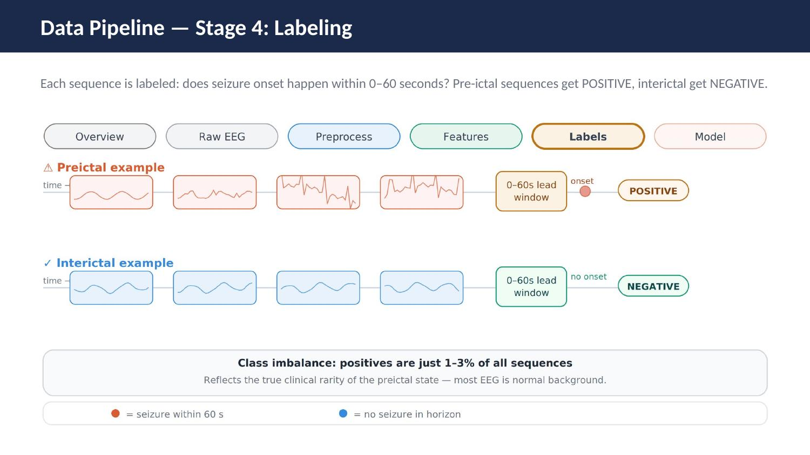
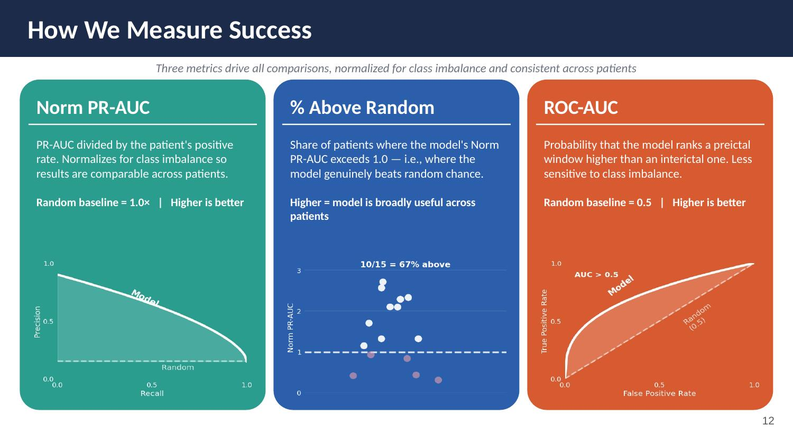
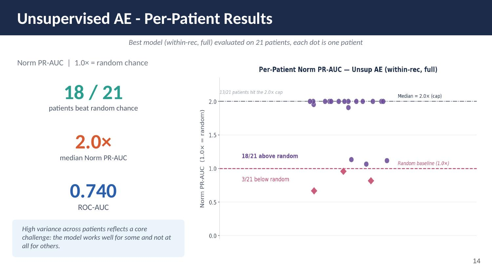
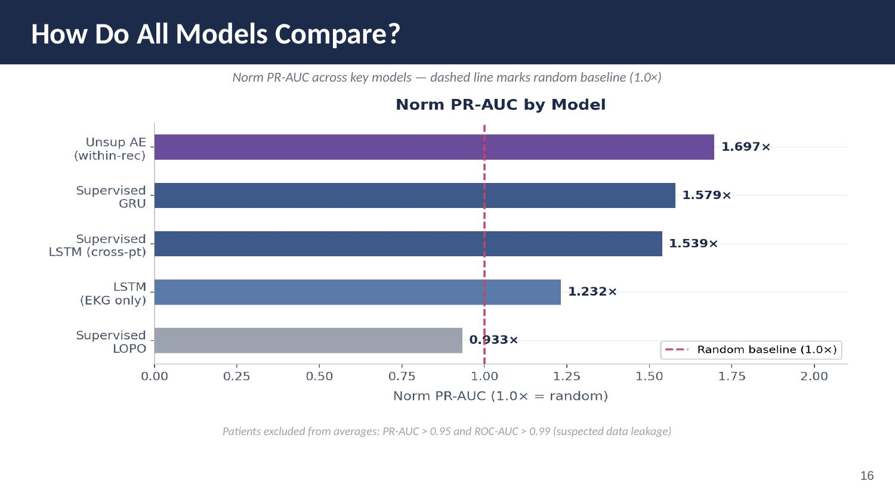

Imminent Seizure Prediction
A monitoring system for patients with drug-resistant epilepsy that detects pre-seizure signals in continuous EEG recordings and triggers an alert about 60 seconds before onset, giving patients time to reach safety.
Problem
Roughly 30% of epilepsy cases are drug-resistant, leaving around 1 million Americans with uncontrolled seizures. Current monitoring systems can detect a seizure once it has started, but that is too late for patients to react. The goal is prediction: alerting patients at least 60 seconds before onset. Early signals are subtle, highly variable across patients, and often inconsistent across sessions for the same patient.
Dataset
We used the Temple University Seizure Corpus (TUSZ), a large clinical EEG dataset with 675 patients and over 7,000 recordings. The working subset covered 376 patients across 6,817 recordings with 3,042 labeled seizure events, using predefined train/dev/eval splits with no patient overlap.
Data Pipeline
Each recording goes through a five-stage pipeline. It is standardized to a consistent montage, bandpass filtered (0.5–40 Hz), resampled to 80 Hz, and quality-masked. The cleaned signal is then chopped into 2-second windows with 1-second stride, collapsed into spectral + statistical feature vectors, and grouped into 20-step sequences. Each sequence is labeled positive if a seizure onset falls within the next 0–60 seconds (the preictal class), negative otherwise.
Positives are just 1–3% of all sequences, which reflects the clinical rarity of the preictal state. This makes evaluation metric choice critical.


Evaluation Metrics
Standard accuracy is misleading with extreme class imbalance. Three metrics were used across all models: Normalized PR-AUC (PR-AUC divided by the patient’s positive rate, so random baseline = 1.0×), % Above Random (share of patients where the model beats chance), and ROC-AUC (less sensitive to imbalance, random baseline = 0.5).

Results
| Model | Norm PR-AUC | % Above Random | ROC-AUC |
|---|---|---|---|
| Random baseline | 1.0× | — | 0.500 |
| Supervised LSTM (session) | 1.044× | 58.8% | 0.470 |
| Supervised LSTM (per-file) | 1.357× | 66.7% | 0.524 |
| Supervised GRU | 1.579× | — | — |
| Unsupervised AE (per-file) | 1.489× | 66.7% | 0.658 |
| Unsupervised AE (within-rec, full)★ best | 1.697× | 85.7% | 0.740 |
Unsupervised autoencoder approaches consistently outperformed supervised models. The within-recording setup, where the model sees the patient's own baseline before predicting, was far stronger than cross-patient generalization. This points toward per-patient models as the right direction.


Key Findings
- Per-patient models consistently outperformed single global models. Seizure patterns are highly individual.
- Unsupervised autoencoders outperformed all supervised approaches, likely because labeled preictal examples are too scarce to train on directly.
- Performance is highly sensitive to data split: within-recording is much easier than per-file or cross-patient, exposing realistic generalization challenges.
- EKG-only ablation showed degraded performance. EEG carries predictive signal that EKG alone doesn't replicate.
My Contributions
Contributed across data processing, feature engineering, evaluation, and modeling, with a primary focus on the modeling work: implementing and iterating on the supervised and unsupervised model families, and analyzing where and why the autoencoder approach outperformed recurrent baselines.
What’s Next
Two things would strengthen this most: longer recordings and stronger baselines. Testing on CHB-MIT, which has much longer continuous recordings per patient, would show whether the autoencoder's within-recording advantage holds with more preictal history. Switching from prediction to detection would also help clarify how much of the difficulty is specific to the 60-second horizon. The team flagged EEG foundation models as natural next baselines to benchmark against: BENDR, BIOT, LaBraM, and EEGPT.